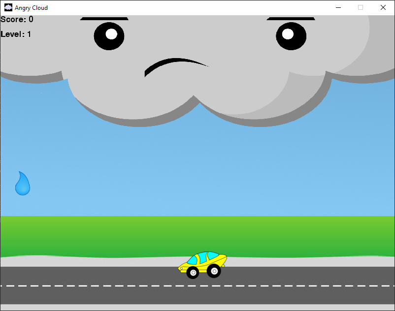

The following is a list of projects in various states of development. This page will be continuously updated with
new projects as they are created. Full source code and many more projects can be viewed on my
GitHub.
Stickman DodgeballAndroid (Java)
A collision-based game developed for Android mobile devices. In this game, wrenches are randomly spawned and it
is up to the user to dodge them. Users gain points and can unlock new outfits through achieving a high enough
score.
Angry CloudPython

A collision based game developed with Python and the Pygame module. Users control a racecar and attempt to dodge
all of the raindrops. The more drops that are avoided results in a higher score and increased rate of the
raindrops falling.
Wizard ScorekeeperPython
A Graphical User Interface for keeping score of the card game Wizard. It was developed using Python and
the Tkinter library. The Wizard Scorekeeper can keep track of the scores of 3-6 players, and export a .csv file
with the results at the end of the game.
JeffToppings.caAngular 9
This website was developed using Angular 9. I plan to continuously update it as I further develop more
applications. To see the source code for this website, clink on the link below.